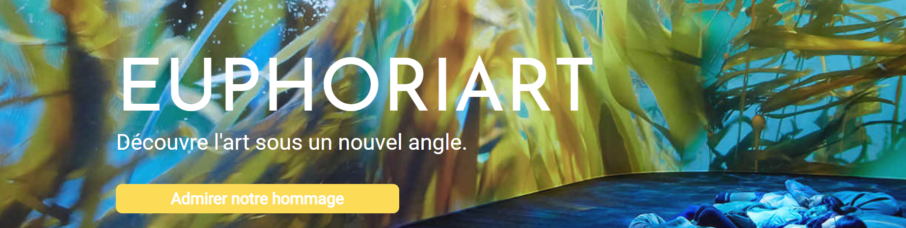

<section id="projets">
  <div class="container">
    <h3 class="text-center">< Mes projets ></h3>

    <div class="card">
      <div class="card-body">
        <h4 class="card-title">Euphoriart - Hommage</h4>
        <p class="card-text">
          <strong>Compétition<br /></strong>
          <strong>Thème</strong> : Campagne de sensibilisation à l'art.
          <br />Groupe de 12 étudiants en charge de créer une association
          (Euphoriart) et créer une compagne de sensibilisation (Hommage). Mon
          rôle dans ce projet a été de développer le site de l'association et le
          site campagne. <br />
          <strong>Site</strong> : <a href="euphoriart.fr">Euphoriart.fr</a>
        </p>
      </div>
      
    </div>
    <br />
    <div class="card">
      <div class="card-body">
        <h4 class="card-title">Tunew</h4>
        <p class="card-text">
          <strong>Projet MMI<br /></strong>
          <strong>Thème</strong> Tunew est une webradio créée par 4 étudiants
          qui aborde des sujets autour des moyens pour améliorer le monde de
          demain et également la vie des jeunes. Elle dispose de trois émissions
          : Nuance Verte, l’émission sur l’écologie, l’environnement et les
          produits naturels Les conseils de demain qui est une émission qui
          présentera les conseils et astuces pour les jeunes Génération à suivre
          qui est une émission pour découvrir des jeunes talents. <br />
          <strong>Site</strong> :
          <a href="https://clee1999.github.io/tunew/">tunew</a>
        </p>
      </div>
      
    </div>
    <h3 class="mt-5 text-center wow slideInRight">
      Pour plus de projets :
      <span style="font-size: 130px;">
        <a href="https://github.com/clee1999" target="_blank"
          ><i class="fab fa-github"></i
        ></a>
      </span>
    </h3>
  </div>
</section>
